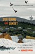
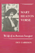
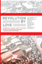
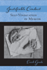
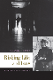
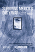
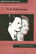

|
Building
the Beloved Community
Maurice McCrackin's Life for Peace and Civil Rights
Bechtel, Judith A. and Robert M. Coughlin, foreword by Daniel
Berrigan
288 pp • Spring 1991
cloth 978-0-87722-783-0 |
 |
Softly, with Feeling
Joe Wilder and the Breaking of Barriers in American Music
Berger, Edward
400 pp • 6x9 •
Spring 2014
cloth 978-1-4399-1127-3 |
|  |
Suffering and Sunset
World War I in the Art and Life of Horace Pippin
Bernier, Celeste-Marie
New in Paperback!
552 pp • 6.125x9.25 • Fall 2017
paper 978-1-4399-1274-4
cloth 978-1-4399-1273-7 |
|
Tasting Freedom
Octavius Catto and the Battle for Equality in Civil War America
Biddle, Daniel R. and Murray Dubin
New in Paperback!
632 pp • 6x9 • Fall 2017
paper 978-1-4399-1349-9
cloth 978-1-59213-465-6
|
|
The
Woman I Was Not Born To Be
A Transsexual Journey
Brevard, Aleshia
272 pp • 6x9 • Fall 2000
paper 978-1-56639-840-4
cloth 978-1-56639-839-8
|

|
Hapa Girl
A Memoir
Chai, May-lee
232 pp • 5.5x8.25 • Spring 2007
paper 978-1-59213-616-2
cloth 978-1-59213-615-5
|

|
Paper
Son
One Man's Story
Chin, Tung Pok with Winifred C. Chin, introduction by K. Scott
Wong
184 pp • 5.5x8.25 • Fall 2000
paper 978-1-56639-801-5
cloth 978-1-56639-800-8
|
|
This
Fine Place So Far from Home
Voices of Academics from the Working Class
edited by Dews, C. L. Barney and Carolyn Leste Law
352 pp • 6x9 • Spring 1995
paper 978-1-56639-291-4
cloth 978-1-56639-290-7
|
|
Jim
Bunning
Baseball and Beyond
Dolson, Frank
320 pp • 6x9 • Fall 1998
cloth 978-1-56639-636-3
|

|
Final
Negotiations
A Story of Love, and Chronic Illness
Ellis, Carolyn
368 pp • 6x9 • Fall 1994
paper 978-1-56639-271-6
cloth 978-1-56639-270-9
|
 |
Mary
Heaton Vorse
The Life of an American Insurgent
Garrison, Dee
400 pp • Spring 1989
paper 978-0-87722-781-6
cloth 978-0-87722-601-7 |

|
My
Father's Testament
Memoir of a Jewish Teenager, 1938-1945
Gastfriend, Edward, afterword by Björn Krondorfer
187 pp • 5.5x8.25 • Fall 1999
paper 978-1-56639-735-3
cloth 978-1-56639-734-6
|
|  |
Revolution By Love
edited by Ghandour, Dala, Emna Ben Yedder, Mohammed Masbah and Steve Parks
194 pp • 5x7 • Spring 2014
cloth 978-0-98404-299-9 |
 |
Whisper Not
The Autobiography of Benny Golson
Golson, Benny and Jim Merod
352 pp • 6x9 • Spring 2016
cloth 978-1-4399-1333-8
|
|  |
Justifiable Conduct
Self-Vindication in Memoir
Goode, Erich
224 pp • 6x9 • Spring 2013
paper 978-1-4399-1026-9
cloth 978-1-4399-1025-2 |

|
I Walked with Giants
The Autobiography of Jimmy Heath
Heath, Jimmy and Joseph McLaren
344 pp • 6x9 • Fall 2009
cloth 978-1-4399-0198-4
|
|
Robert
Kennedy
Brother Protector
Hilty, James W.
672 pp • 6x9 • Spring 2000
paper 978-1-56639-766-7
cloth 978-1-56639-566-3
|
|
Home
Bound
Growing Up with a Disability in America
Irvin, Cass
232 pp • 6x9 • Fall 2003
paper 978-1-59213-220-1
cloth 978-1-59213-219-5
|

|
Barriers and Belongings
Personal Narratives of Disability
Edited by Jarman, Michelle, Leila Monaghan, and Alison Quaggin Harkin
286 pp • 6x9 • Fall 2016
paper 978-1-4399-1388-8
cloth 978-1-4399-1387-1
|
|
Not from Here
A Memoir
Johnson, Allan G.
186 pp • 5.5x8.25 • Spring 2015
cloth 978-1-4399-1245-4 |

|
Fireweed
A Political Autobiography
Lerner, Gerda
408 pp • 7x10 • Spring 2002
paper 978-1-59213-236-2
cloth 978-1-56639-889-3
|

|
Granville
Hicks
The Intellectual in Mass Society
Levenson, Leah and Jerry Natterstad
336 pp • 6x9 • Fall 1993
cloth 978-1-56639-104-7 |
|
A
Life in the Struggle
Ivory Perry and the Culture of Opposition
Lipsitz, George
Revised Edition
320 pp • 6x9 • Spring 1995
paper 978-1-56639-321-8
|
|
Danny
Litwhiler
Living the Baseball Dream
Litwhiler, Danny with Jim Sargent, foreword by Stan Musial
312 pp • 6x9 • Fall 2006
cloth 978-1-59213-524-0
|
|
Espejos y ventanas (Mirrors and Windows)
historias orales de trabajadores agricolos y sus familias (Oral Histories of Mexican Farmworkers and the Families)
edited by Lyons, Mark, and August Tarrier
318 pp • 6x9 • Spring 2012
paper 978-0-971-2996-6-5 |
|
On Any Given Sunday
A Life of Bert Bell
Lyons, Robert S.
352 pp • 6x9 • Fall 2009
cloth 978-1-59213-731-2
|

|
Frankie Manning
Ambassador of Lindy Hop
Manning, Frankie and Cynthia R. Millman
312 pp • 6x9 • Spring 2007
paper 978-1-59213-564-6
cloth 978-1-59213-563-9 |

|
Swingin'
at the Savoy
The Memoir of a Jazz Dancer
Miller, Norma with Evette Jensen
304 pp • 6x9 • Spring 2001
paper 978-1-56639-849-7
|

|
White
Boy
A Memoir
Naison, Mark D.
240 pp • 6x9 • Spring 2002
paper 978-1-56639-942-5
cloth 978-1-56639-941-8
|
|
Harvey
and Jessie
A Couple of Radicals
O'Connor, Jessie Lloyd, Harvey O'Connor and Susan M. Bowler
278 pp • Spring 1988
paper 978-0-87722-659-8
cloth 978-0-87722-519-5 |

|
The
Beat of My Drum
An Autobiography
Olatunji, Babatunde with Robert Atkinson and Akinsola Akiwowo,
foreword by Joan Baez, introduction by Eric Charry
272 pp • 6x9 • Spring 2005
paper 978-1-59213-354-3
cloth 978-1-59213-353-6
|
|
James Naismith
The Man Who Invented Basketball
Rains, Rob with Hellen Carpenter
216 pp • 5.5x8.25 • Fall 2009
paper 978-1-4399-0134-2
cloth 978-1-4399-0133-5
|
 |
Putting the Horse Before Descartes
My Life's Work on Behalf of Animals
Rollin, Bernard E.
304 pp • 6x9 • Fall 2010
cloth 978-1-59213-825-8
|
|
All
is Never Said
The Story of Odette Harper Hines
Rollins, Judith
288 pp • 6x9 • Spring 1995
paper 978-1-56639-308-9
cloth 978-1-56639-307-2
|
|
The Outsider
Albert M. Greenfield and the Fall of the Protestant Establishment
Rottenberg, Dan
384 pp • 9x9 • Fall 2014
cloth 978-1-43990-841-9 |
|
Don't Call Me Inspirational
A Disabled Feminist Talks Back
Rousso, Harilyn
224 pp • 5.25x9 • Spring 2013
paper 978-1-4399-0937-9
cloth 978-1-4399-0936-2
|

|
Out
of the Jungle
Jimmy Hoffa and the Remaking of the American Working Class
Russell, Thaddeus
296 pp • 6x9 • Spring 2003
paper 978-1-59213-027-6
|

|
Silent Gesture
The Autobiography of Tommie Smith
Smith, Tommie with David Steele
288 pp • 6x9 • Spring 2008
paper 978-1-59213-640-7
cloth 978-1-59123-639-1 |
 |
Risking Life and Lens
A Photographic Memoir
Stummer, Helen M.
254 pp • 6x9 • Fall 2016
paper 978-1-4399-1457-1
cloth 978-1-4399-1456-4
|
|
Political
Woman
Florence Luscomb and the Legacy of Radical Reform
Strom, Sharon Hartman
352 pp • 7x10 • Fall 2000
paper 978-1-56639-819-0
cloth 978-1-56639-818-3
|
|
The Forgotten Bottom Remembered
Stories from a Philadelphia Neighborhood
edited by Tarrier, August
202 pp • 6x9 • Spring 2012
paper 978-0-971-2996-4-1 |
|
The
Feel of Silence
Tucker, Bonnie Poitras, foreword by Frederic Hafferty
232 pp • 6x9 • Fall 1995
paper 978-1-56639-352-2
cloth 978-1-56639-351-5
|
 |
Surviving
Mexico's Dirty War
A Political Prisoner's Memoir
Ulloa Bornemann, Alberto, edited by Arthur Schmidt and Aurora
Camacho de Schmidt
232 pp • 6x9 • Fall 2006
paper 978-1-59213-423-6
cloth 978-1-59213-422-9
|
|
The
Education of a University President
Wachman, Marvin, foreword by James W. Hilty
240 pp • 6x9 • Spring 2005
cloth 978-1-59213-376-5
|
 |
Biz Mackey, a Giant behind the Plate
The Story of the Negro League Star and Hall of Fame Catcher
Westcott, Rich, forewords by Monte Irvin and Ray Mackey III
160 pp • 5.375 x 8.5 • Fall 2017
cloth 978-1-4399-1551-6
|
|
The Mogul
Eddie Gottlieb, Philadelphia Sports Legend and Pro Basketball Pioneer
Westcott, Rich, foreword by Paul Arizin
320 pp • 6x9 • Spring 2008
cloth 978-1-59213-655-1
|
 |
V.
F. Calverton
Radical in the American Grain
Wilcox, Leonard
311 pp • 6x9 • Spring 1992
cloth 978-0-87722-929-2 |
|
Samuel
Joseph May and the Dilemmas of the Liberal Persuasion, 1797-1871
Yacovone, Donald
300 pp • Spring 1991
cloth 978-0-87722-760-1 |
|
Forklore
Recipes and Tales from an American Bistro
Yin, Ellen 288
pp • 10x8 • Fall 2007
cloth 978-1-59213-651-3
|